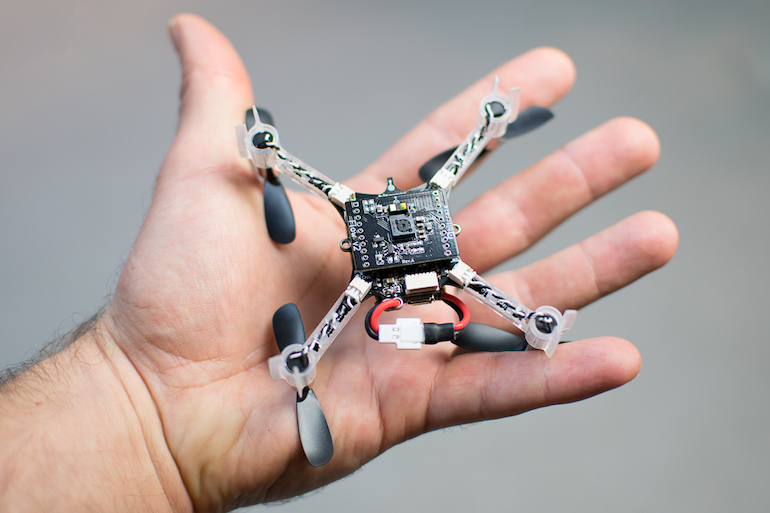
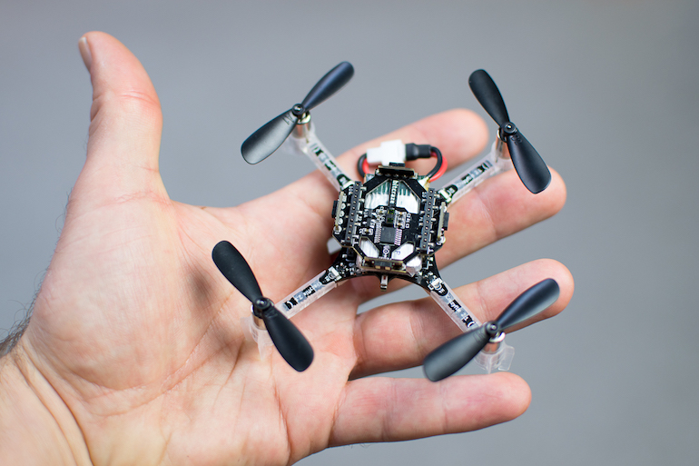
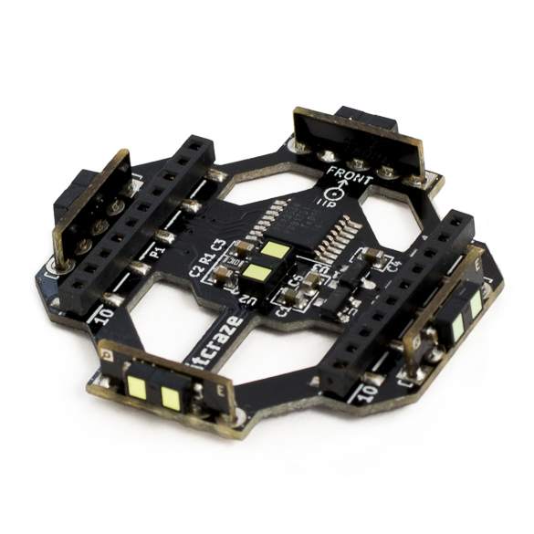
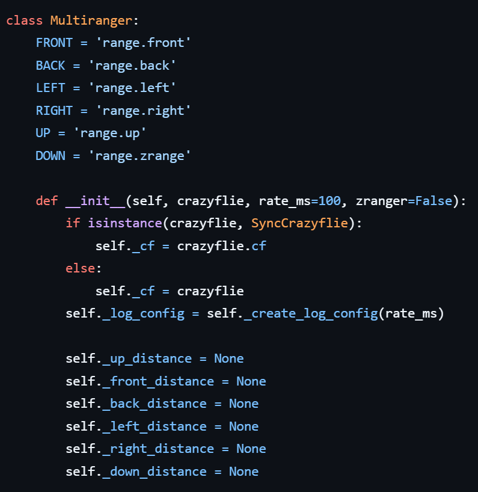

实验 4: multiranger
Multi-ranger Sensor Experiment
一、实验目标
学习新的传感器multiranger的原理。
学习cflib库中multiranger传感器相关的编程方法。
二、实验准备
之前已经配置好连接到无人机的客户端的虚拟机系统。并且需要具备前几门实验已经积累的linux系统操作经验。再需要一点的python编程基础。
本实验中需要用到的硬件设备：
- Crazyflie 2.0
- Crazyradio PA
- Flow deck
- Multiranger deck
三、实验步骤
本次实验将主要进行python脚本的运行，编程库参考资料已保存到course-materials：course-materials/01_web_snapshots/10_bitcraze_cflib_user_guides.html。
若在进行实验中遇到一些困难，也可打开上述资料包网页快照进行进一步参考。同时部分操作和知识要点也在上节课的实验手册中有提及，如有不会的地方可以再参考上节的实验手册，这部分操作这节实验手册不再赘述。
Multiranger Deck 具有多个超声波传感器，用于检测Crazyflie周围的障碍物。这有助于无人机在室内或有障碍物的环境中避免碰撞。安装方法如下图所示：

图 示1 flow deck 安装在下面

图 示2 multi -ranger 安装在上面

该模块的产品说明已保存到course-materials：course-materials/01_web_snapshots/11_bitcraze_multi_ranger_deck.html
实验一：认识multi-ranger的作用
多测距甲板使得无人机能够检测周围的物体。这是通过在以下5个方向上测量物体的距离来实现的：前/后/左/右/上，检测距离最高达4米。
为了最大限度地利用您的多测距仪，它应该与Flow deck V2配对，后者将测量沿地面的运动和到地面的距离。它使Crazyflie能够感知周围的空间，并在有东西靠近时做出反应，例如避开障碍物。它还允许开始处理环境感知问题，如同步定位和映射（SLAM）算法。
接下来，在控制无人机飞行的编程库cflib中，由multiranger类来实现对该模块的调用，该库的具体实现见multiranger.py这个文件。

可以看到，在multiranger.py这个文件中，定义了multiranger类的成员属性，multiranger传感器在工作时会返回六个参数：front、back、left、right、up和down。分别对应着无人机在着六个方向上距离障碍物的距离，具体该如何调用multiranger模块并且查看他的工作状态呢？
接下来，将下方的代码在虚拟机上运行起来，调用无人机上的multiranger模块。具体的操作流程大家应该很熟悉了，这里再简单复述一下，在虚拟机的workspace文件夹下创建一个python文件命名为multiranger_paramet.py，将如下代码复制粘贴至multiranger_paramet.py。该代码主要实现的功能为由无线模块远程连接无人机，实现一个multiranger类，通过该类来调用multiranger模块，在终端中输出该模块的返回值，该代码中，返回了multiranger模块前方也就是无人机的前方朝向距离障碍物的距离，单位为米。
import logging
import sys
import time
import cflib.crtp
from cflib.crazyflie import Crazyflie
from cflib.crazyflie.syncCrazyflie import SyncCrazyflie
from cflib.positioning.motion_commander import MotionCommander
from cflib.utils import uri_helper
from cflib.utils.multiranger import Multiranger
URI = uri_helper.uri_from_env(default='radio://0/60/2M/注意改成对的硬件地址')
if len(sys.argv) > 1:
URI = sys.argv[1]
# Only output errors from the logging framework
logging.basicConfig(level=logging.ERROR)
def is_close(range):
MIN_DISTANCE = 0.2 # m
if range is None:
return False
else:
return range < MIN_DISTANCE
if __name__ == '__main__':
# Initialize the low-level drivers
cflib.crtp.init_drivers()
cf = Crazyflie(rw_cache='./cache')
with SyncCrazyflie(URI, cf=cf) as scf:
# Arm the Crazyflie
scf.cf.platform.send_arming_request(True)
time.sleep(1.0)
with Multiranger(scf) as multiranger:
keep_flying = True
while keep_flying:
print("--------------------------------------")
print("multiranger.front:"+str(multiranger.front))
time.sleep(0.1)
print('Demo terminated!')现在，大家能通过cflib的库函数调用查看到了multiranger模块返回的无人机前方离障碍物的距离，现在根据前面查看到的multiranger.py的内容，调用multiranger类的属性，查看其它五个方向（back、left、right、up、down）离障碍物的距离,在终端中输出。
实验二：“推动“无人机
现在用multiranger模块结合flow deck模块，实现一些有趣的效果。
在虚拟机的workspace文件夹下创建一个python文件命名为multiranger_push.py，将如下代码复制粘贴至multiranger_push.py。该代码的运行效果为，无人机将会自动生成至默认高度悬停，如果检测到四周有障碍物的距离小于0.2米，则会往反方向飞行自动避障，如果人为去接近它，则像是在推动驱赶它。如果手靠近无人机上方，则它也会有反应，慢慢降低高度至降落。
尝试稍微再改变一些参数，让无人机更敏感一些？在0.3米或0.4米的距离就让它开始反应。
"""
Example scripts that allows a user to "push" the Crazyflie 2.0 around
using your hands while it's hovering.
This examples uses the Flow and Multi-ranger decks to measure distances
in all directions and tries to keep away from anything that comes closer
than 0.2m by setting a velocity in the opposite direction.
The demo is ended by either pressing Ctrl-C or by holding your hand above the
Crazyflie.
For the example to run the following hardware is needed:
* Crazyflie 2.0
* Crazyradio PA
* Flow deck
* Multiranger deck
"""
import logging
import sys
import time
import cflib.crtp
from cflib.crazyflie import Crazyflie
from cflib.crazyflie.syncCrazyflie import SyncCrazyflie
from cflib.positioning.motion_commander import MotionCommander
from cflib.utils import uri_helper
from cflib.utils.multiranger import Multiranger
URI = uri_helper.uri_from_env(default='radio://0/80/2M/注意改成对的硬件地址')
if len(sys.argv) > 1:
URI = sys.argv[1]
# Only output errors from the logging framework
logging.basicConfig(level=logging.ERROR)
def is_close(range):
MIN_DISTANCE = 0.2 # m
if range is None:
return False
else:
return range < MIN_DISTANCE
if __name__ == '__main__':
# Initialize the low-level drivers
cflib.crtp.init_drivers()
cf = Crazyflie(rw_cache='./cache')
with SyncCrazyflie(URI, cf=cf) as scf:
# Arm the Crazyflie
scf.cf.platform.send_arming_request(True)
time.sleep(1.0)
with MotionCommander(scf) as motion_commander:
with Multiranger(scf) as multiranger:
keep_flying = True
while keep_flying:
VELOCITY = 0.5
velocity_x = 0.0
velocity_y = 0.0
if is_close(multiranger.front):
velocity_x -= VELOCITY
if is_close(multiranger.back):
velocity_x += VELOCITY
if is_close(multiranger.left):
velocity_y -= VELOCITY
if is_close(multiranger.right):
velocity_y += VELOCITY
if is_close(multiranger.up):
keep_flying = False
motion_commander.start_linear_motion(
velocity_x, velocity_y, 0)
time.sleep(0.1)
print('Demo terminated!')链接资料整理
本节将手册中出现的外部链接整理为离线可读要点。为避免材料过长，网页内容以课堂用途和关键提示形式归纳，原始 URL 保留供课后查阅。
- Bitcraze cflib 用户指南（网页标题：User guides | Bitcraze）
原始链接：https://www.bitcraze.io/documentation/repository/crazyflie-lib-python/master/user-guides/
课堂用途：查询 cflib 示例、连接方式、日志读取和控制接口。
- 该文档适合作为 Python 控制脚本的 API 参考入口。
- 与课堂相关的重点包括 SyncCrazyflie、MotionCommander、日志配置、参数读取和示例程序结构。
- 建议先跑通课堂提供的脚本，再回到官方示例查找可替换的控制方式。
- Bitcraze Multi-ranger deck 产品说明（网页标题：Multi-ranger deck | Bitcraze）
原始链接：https://www.bitcraze.io/products/multi-ranger-deck/
课堂用途：了解 multiranger 扩展板的测距方向、适用场景和硬件限制。
- multiranger 用于感知前、后、左、右、上等方向的近距离障碍物。
- 课堂中用它实现避障、贴墙飞行、距离触发动作和建图数据采集。
- 实际效果会受反光表面、障碍物材质、飞行速度和姿态稳定性影响。